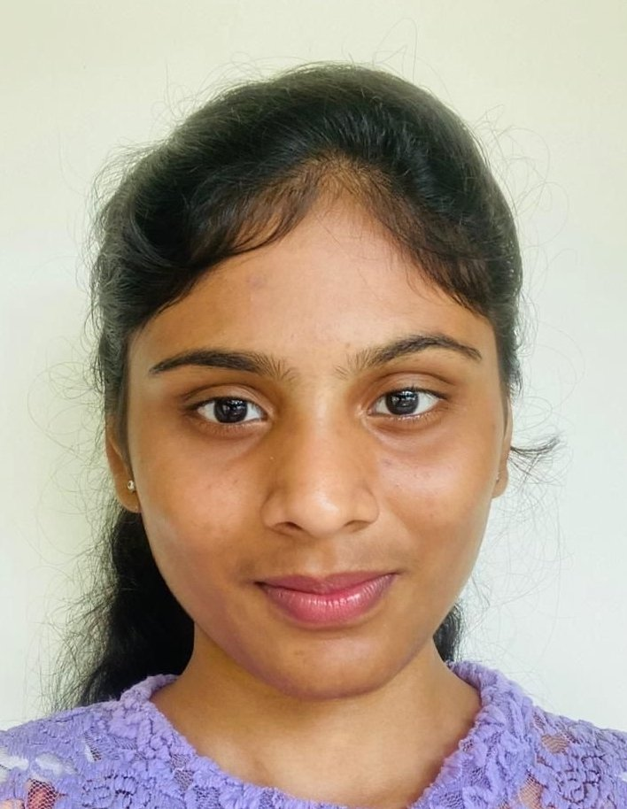

VAKA ISHA REDDY
ishareddyvaka@gmail.com | 9121214214 |
Linkedin
EDUCATION
Shiv Nadar University, Chennai, TN - (Sept 2021 - Present)
Pursuing B.Tech Computer Science and Engineering (Specialization in IoT)
- CGPA: 8.7 (First 4 semesters)
- Volunteer in NSS- with 80 hours
EXPERIENCE
Tamil Nadu Cyber Crime Wing - (June 2023)
Intern
- Developed a Twitter scraper
- NLP based classification of complaints
- Data Analysis & Visualization of Reported Crimes
Alibi Technology - (June 2023)
Industrial Training
- Hands on experience on different technologies used in Cyber Forensics
PROJECTS
Fake License Plate Detection
PYTHON|OPENCV|STREM
LIT
- A web-based project that extracts license plate numbers from images or videos using the
trained ML model and compares them with a database of registered vehicles to determines
whether the inputted vehicle is genuine or fake.
- In case of detection of a Fake license plate, an immediate alert is sent to the nearest
police station in the form of a call and a detailed report is sent through email
- Data Analysis & Visualization of Reported Crimes
Volunteered geographical information
PYTHON|STREAM
LIT
- Created a data processing pipeline capable of merging matched columns, removing missing values,
generating UUIDs, and performing basic checks such as phone number and text length to guarantee
data validity.
- Once the data has been processed, it will be merged together according to the Feature name and
produced as a CSV file.
- Additional capabilities include a graphical user interface in the form of an interactive web
application to show data, automated geocoding when new data is added, and innovative data
visualizations after data analysis.
AI ASSISTANCE FOR SIGN LANGUAGE
PYTHON|STR
EAMLIT|BERT|OPENCV|MEDIAPIPE
- The application takes the person’s sign language gesture as input from the camera and translates it t
o speech.
- Similarly, it converts text to gestures in Indian sign language. We used the SVM approach to train th
e ML model.
- We’ve also introduced word autocomplete, next word prediction, and backspacing.
SKILLS
- Proficient in: Python, Machine Learning, Deep Learning, matlab, c, Data Structures
- Familiar with: MySql, Java
- communication skills (English)
HONORS & AWARDS
Tamil Nadu Police Hackathon - (March 2023)
- Third place among 347 Teams, won a cash price of rs.30000, for the project "Fake License Plate Det
ection"
OpenCV AI Competition 2022 - (November 2022)
- Second prize for the project "AI Assistance for Sign Language"
DST Geospatial Hackathon, Research Challenge- (February 2023)<
/i>
- Finalists for the project "Volunteered Geographical Information"
CyberX- (May 2023)
- 5th place for the project "Anomoly Detection"